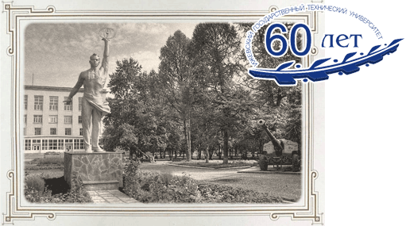

История
 Ижевский государственный технический университет (ИжГТУ) (до 1994 года — Механический институт Министерства высшего образования СССР, Ижевский механический институт), был образован на основании Постановления Совета Министров СССР № 1034 от 22 февраля 1952 года как высшее учебное заведение Министерства высшего образования СССР для обеспечения квалифицированными инженерными кадрами промышленности СССР, города Ижевска и Удмуртской АССР.
Первый прием студентов, состоявшийся в сентябре 1952 года, составил 200 человек. Постепенно расширился список факультетов и специальностей, а в городах республики и региона (Воткинск, Сарапул, Глазов, Чайковский, Камбарка) были открыты филиалы
В 2012 году университету было присвоено имя легендарного оружейника Михаила Тимофеевича Калашникова.